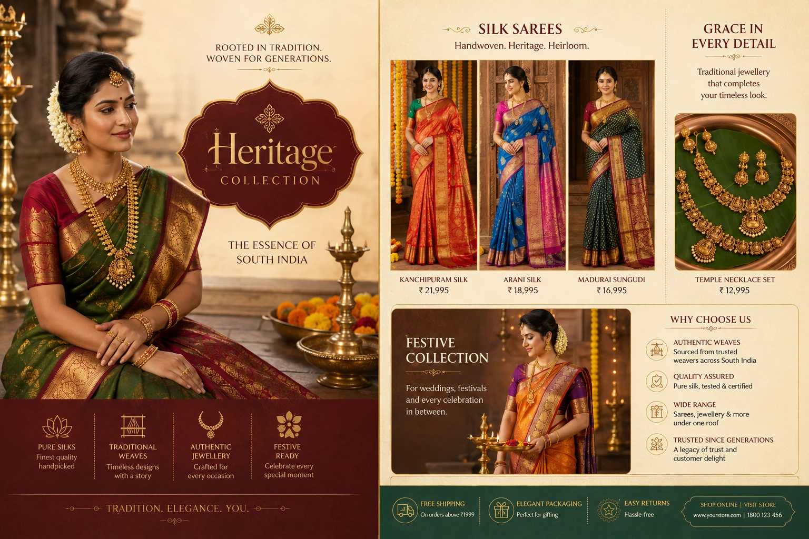
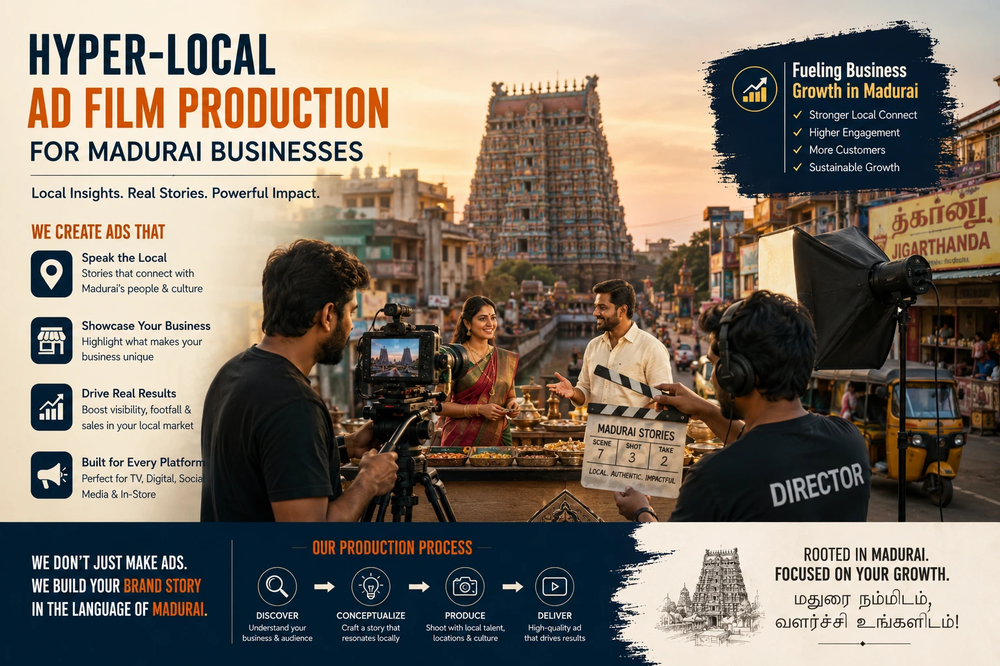

Leveraging Hyper-Local Cultural Elements in Regional Brand Promotion Shoots
Why Generic Aspirational Imagery Fails Regional Indian Audiences
The default visual vocabulary of Indian commercial photography — the marble-floored studio, the aspirational urban lifestyle setting, the generic model in a globally neutral environment — is a visual vocabulary designed for a pan-Indian, urban-aspirational demographic that may represent the intended audience of a national campaign but rarely represents the actual audience of a regional Tamil Nadu brand.
When a Madurai silk brand uses generic aspirational imagery to present its Kanjivaram collection, the audience — Tamil women who know exactly what these sarees look like worn at a Meenakshi Amman temple wedding, who recognise the specific weight and drape of authentic handloom, who have a specific emotional relationship with the occasions these garments represent — sees nothing of their own world in the brand's communication. The imagery is technically accomplished; it is culturally foreign. And a brand that looks foreign to its own audience is a brand that has missed the most commercially powerful visual communication available to it.
Regional brand promotion photography that integrates genuine hyper-local cultural elements — the specific visual world of South Indian life, the specific architectural contexts of Tamil Nadu, the specific cultural occasions that give a brand's products their deepest meaning — produces a recognition and resonance response that no amount of aspirational generic imagery can achieve. The audience sees their own world reflected back at them. And that recognition is the beginning of every genuine brand relationship.
The Visual World of Tamil Nadu and Madurai: An Inventory for Brand Photography
Effective hyper-local ad film production and South Indian retail marketing visuals begin with a genuine and specific understanding of the visual vocabulary available in Tamil Nadu and Madurai — not a generic collection of "South Indian" visual references but the specific, identifiable elements that belong unmistakably to this specific place and culture.
The visual inventory for Tamil Nadu and Madurai brand photography:
- Architecture: Dravidian temple structures and their specific visual language. The Meenakshi Amman Temple's gopurams — the multi-tiered towers covered in thousands of painted stucco figures — are among the most visually distinctive architectural structures in India, and their visual language extends into the design of smaller local temples across the region. The specific geometry of Dravidian architecture — the mandapam columns, the temple tank reflections, the corridor perspectives — provides a visual context for brand photography that is simultaneously deeply culturally specific and visually extraordinary. For brands whose products belong to the cultural world these temples represent — textiles, jewellery, devotional goods, festival foods — the temple architecture is the most authentic and resonant background available.
- Chettinad heritage architecture: the visual world of regional prosperity. The palatial mansions of the Chettinad region — built by the Nattukotai Chettiars through the 19th and early 20th centuries — represent one of the most distinctive and visually rich architectural traditions in India. The specific elements of Chettinad architecture — the carved wooden doorframes, the Athangudi tile floors, the courtyard with the sky-roof opening, the carved plaster pillars, the antique furniture and objects — provide a visual context for premium and heritage brand photography that communicates prosperity, tradition, and refined taste with a regional specificity that no generic heritage backdrop can replicate.
- Textile and colour: the visual identity of Tamil Nadu's craft traditions. Tamil Nadu is one of India's most significant textile regions — Kanjivaram silk, Madurai Sungudi cotton, Thanjavur silk, handloom cotton in the region's distinctive colour combinations — and the visual world associated with these traditions provides rich material for traditional product catalog styling. The specific colour palette of Tamil Nadu textiles — deep reds, temple gold zari, emerald greens, vivid peacock blue, the specific mustard-yellow of traditional Madurai cotton — is a visual vocabulary that the region's audience recognises and responds to with an immediacy that imported colour palettes cannot achieve.
- Festival and ritual visual culture. Tamil Nadu's festival calendar — Pongal, Karthigai Deepam, Chithirai festival in Madurai, Navaratri, Diwali — each produces a specific and extraordinary visual world: the kolam patterns of Pongal morning, the million oil lamps of Karthigai Deepam, the chariot procession of Chithirai through Madurai's streets, the decorated clay pots of Pongal celebrations. For brands whose products are associated with festive occasions — textiles, jewellery, sweets, home goods — the festival visual context is the most emotionally resonant background available for cultural storytelling in ads.
- Daily life and market culture. The specific daily life visual world of Madurai and Tamil Nadu — the jasmine garland sellers of Madurai's flower market, the filter coffee tumbler rituals, the tiffin meals on banana leaves, the Madurai malli jasmine that is among the most fragrant in India, the specific visual of a South Indian street at morning — provides the authentic everyday visual context that makes localized cultural video production resonate with the audience's daily experience.
Immediate Audience Recognition
The audience that sees their own visual world — their architecture, their festival context, their daily life — in a brand's photography registers the brand as one of their own. This cultural recognition response is faster and more commercially powerful than any aspirational appeal that requires the audience to project themselves into a world they do not inhabit.
Authentic Product Context
Products designed for specific cultural contexts communicate their value most honestly when photographed in those contexts. A Kanjivaram saree photographed at a temple wedding, in the specific light and context where it is actually worn, communicates its use and its beauty more accurately than the same saree photographed in a studio against a neutral background.
Differentiation from National Brands
National brands with pan-India communication cannot use the specific visual vocabulary of Madurai and Tamil Nadu — it is too specific, too local, too culturally precise for content that must work across India's full geographic and cultural diversity. This is the regional brand's exclusive visual advantage: the ability to speak with a specificity and authenticity that no national brand can match.
Heritage Brand Authority
For brands with genuine roots in the region's craft traditions, commercial history, or cultural life, hyper-local visual imagery is the most credible form of brand heritage communication available — because it shows the actual heritage rather than claiming it through corporate language. A silk brand whose photography uses genuine Kanjivaram loom imagery is communicating heritage through evidence.

Heritage Brand Visual Assets: Building a Culturally Authentic Image Library
Heritage brand visual assets for Tamil Nadu and Madurai brands require a production approach that prioritises cultural authenticity over generic visual quality — which means investing in the specific locations, the specific styling details, and the specific cultural knowledge that produces imagery the audience recognises as genuinely belonging to their world rather than referencing it from the outside.
The production investment priorities for a heritage brand visual assets library:
- Location research that goes beyond obvious landmarks. The Meenakshi Amman Temple is the first visual reference that every South India shoot considers — and because it is the obvious choice, it is the most commonly used and therefore the least distinctive. A thorough location research process identifies the less-documented but equally visually extraordinary contexts: the specific corridors and mandapams of lesser-visited temples in the region, the Chettinad mansions whose owners welcome photography, the specific streets and neighbourhoods of Madurai's heritage core that retain the visual character of the city's pre-modern commercial history, and the natural environments — the Vaigai riverbank, the agricultural contexts of the surrounding districts — that provide a different dimension of the region's visual world.
- Styling that uses genuine traditional objects, not reproductions. The cultural authenticity of a heritage brand image is determined in large part by the authenticity of its styling objects — the specific vessels, the specific jewellery forms, the specific textiles, the specific ritual objects that appear in the frame. Sourcing genuine traditional objects from the region — antique bronze vessels from Thanjavur, genuine temple jewellery from Madurai's jewellery tradition, authentic handloom fabrics from the region's weaving centres — produces styling that the audience recognises as real, in a way that reproduction or generic "Indian" styling objects do not.
- Casting that reflects the actual demographic of the brand's audience. Regional brand photography for Tamil Nadu audiences should cast subjects who reflect the specific demographic reality of the Tamil audience — the specific skin tones, the specific facial features, the specific styling preferences, and the specific cultural comfort with traditional dress and contexts that characterises the brand's actual customers. Casting against demographic reality — using subjects who do not reflect the Tamil audience — produces imagery that is beautiful but foreign to the people it is meant to speak to.
- Light quality that honours the region's natural light character. Southern Tamil Nadu's light — particularly during the winter months — has a specific warm, high-contrast, directional quality that is among the most photogenic natural light in India. A heritage brand visual assets library that captures products and subjects in this specific light — rather than replicating studio lighting that could have been produced anywhere — communicates geographic specificity through the image's very light quality, independent of the content of the image.
Traditional Product Catalog Styling: The South Indian Commercial Approach
Traditional product catalog styling for South Indian retail brands integrates culturally specific visual elements into the technical structure of commercial product photography — producing catalog images that serve both the e-commerce function of clear product documentation and the brand communication function of cultural identity.
The specific styling approaches for the major South Indian retail product categories:
Silk Sarees and Textiles
- Location: temple corridor, Chettinad courtyard, or heritage household interior rather than studio
- Styling: traditional temple jewellery, fresh Madurai malli jasmine in hair, specific traditional footwear
- Model: styled in traditional draping specific to Tamil occasion-wear rather than fashion-forward contemporary draping
- Props: traditional bronze or brass vessels, kolam patterns on the floor, specific festival context objects
Jewellery and Goldwork
- Location: temple interior, Chettinad mansion, or traditional puja room context
- Styling: traditional South Indian bridal makeup and hair styling rather than contemporary or North Indian bridal conventions
- Background: specific textile backgrounds in the colours associated with the jewellery form — deep silk reds for traditional gold, peacock blue for temple gold
- Props: traditional bronze lamps, flower offerings, specific auspicious objects associated with South Indian jewellery-wearing occasions
Food and Specialty Products
- Serving vessels: traditional bronze and bell metal vessels, banana leaves, specific South Indian ceramic traditions
- Food environment: the South Indian dining context — floor-level dining, courtyard context, festival preparation environment
- Colour context: the specific colour palette of South Indian food presentation — the specific greens of curry leaves, the specific yellow of turmeric, the specific red of chilli preparations
- Seasonal context: festival-specific food styling for the specific festivals when the product is traditionally prepared or consumed
Cultural Storytelling in Ads: The Narrative Frameworks
Cultural storytelling in ads for Tamil Nadu and Madurai brands draws from the specific narrative traditions, emotional archetypes, and cultural occasions that define the target audience's shared cultural memory. The most commercially effective cultural stories for regional Tamil Nadu brands operate within several established narrative frameworks:
- The generational continuity narrative. The most emotionally resonant story in Tamil commercial culture is the story of cultural inheritance — the grandmother's Kanjivaram passed to her daughter, the family recipe preserved across three generations, the craft skill transmitted from master to student. This narrative communicates simultaneously the product's heritage value, the brand's authenticity, and the cultural importance of preservation and transmission — which resonates powerfully with an audience that places high value on cultural continuity. Localized cultural video production built around the generational continuity narrative consistently produces strong engagement and high share rates in Tamil Nadu audiences.
- The festival and occasion narrative. Tamil Nadu's festival calendar provides a natural series of culturally specific narrative occasions — Pongal, Chithirai, Karthigai, the wedding season — each with its own specific emotional register, visual world, and product relevance. Brands whose products are associated with these occasions have access to a narrative calendar that is both culturally authentic and commercially timely. A saree brand's Pongal campaign that uses the specific visual world of a Pongal morning — the kolam, the new pot, the family gathering, the specific clothing conventions — is speaking to the audience's lived experience at the exact moment it is most emotionally relevant.
- The craft pride narrative. Tamil Nadu's manufacturing and craft traditions — the handloom weaving of Kanchipuram, the bronze casting of Swamimalai, the stone carving of Mahabalipuram, the textile dyeing traditions of Madurai — are sources of genuine regional pride. A brand whose heritage brand visual assets document the craft process — the weaver at the loom, the metal worker at the furnace, the dyer at the vat — is communicating pride in the region's skill tradition in a way that creates both product trust and cultural solidarity with the audience.
- The place pride narrative. For brands based in Madurai, the city's identity as one of India's oldest living cities — the city of the Meenakshi Temple, the city of jasmine, the city of Sangam Tamil literature — is a source of genuine audience pride that can be incorporated into brand storytelling as an expression of shared local identity. A Madurai business growth visuals strategy that explicitly communicates the brand's Madurai origins and the city's cultural significance produces a place-identity bond between brand and audience that brands without genuine local roots cannot replicate.

Hyper-Local Ad Film Production: The Video Production Approach
Hyper-local ad film production for Tamil Nadu brands applies the same cultural specificity principles as regional brand promotion photography but with the additional communicative dimensions that video provides: music, language, sound design, movement, and the emotional depth of the moving image.
The specific production decisions that define high-quality hyper-local ad film production for Tamil Nadu and Madurai:
- Tamil language as the default, not the exception. Brand films for Tamil Nadu audiences should be produced in Tamil as the primary language — not as dubbed versions of Hindi originals or as Tamil-subtitle overlays on Hindi content. Tamil-first production communicates genuine respect for the audience's cultural identity in a way that translated or subtitled content cannot. The specific cadences, the specific emotional vocabulary, and the specific formal registers of Tamil — the difference between the formal Tamil of commercial narration and the specific regional dialect of Madurai Tamil — are culturally significant choices that communicate insider knowledge when used correctly.
- Carnatic and folk music as the sonic identity. The musical vocabulary of Tamil Nadu — Carnatic classical music, the specific folk music traditions of different regions (Villu Pattu, Oppari, Kavadi Chindu), the specific instruments associated with Tamil cultural occasions (nadaswaram, thavil, veenai) — provides a sonic palette for localized cultural video production that communicates cultural belonging through the ear before the eye has processed the visual content. A brand film that opens with a nadaswaram phrase communicates Tamil Nadu specifically and immediately — creating a cultural recognition response that generic stock music cannot produce.
- Festival and seasonal timing for maximum cultural resonance. Hyper-local ad film production for Tamil Nadu is most commercially effective when planned in relation to the Tamil festival calendar — with Pongal content planned for December-January production and January distribution, Chithirai festival content for March-April production, and wedding season content for the specific Tamil calendar wedding months. Festival-timed content reaches the audience at the moment of highest cultural engagement with the specific occasions and occasions-associated products the content features.
- Authentic cast and locations verified by cultural insiders. The cultural authenticity of a hyper-local ad film is ultimately validated by the audience — and that audience is a highly perceptive judge of what is genuine versus what is appropriated. The production team, the cast, the location scouts, and the styling team for a hyper-local Tamil Nadu production should include people who are genuine cultural insiders — who know which temple corridors are used for which occasions, which jewellery forms are appropriate for which ceremonies, and which details of traditional dress and behaviour are specific to the Madurai context versus the generic "South Indian" context.
Madurai Business Growth Visuals: The Local Brand Competitive Advantage
Madurai business growth visuals — the specific application of hyper-local cultural photography and video to the commercial communication of Madurai-based businesses — represent a competitive advantage that is available exclusively to brands with genuine roots in the city and the region. No national brand can produce imagery that is as specifically and authentically Madurai as the imagery produced by a brand that genuinely belongs to the city — and the Madurai audience's response to that authentic local identity is a commercial asset of genuine and measurable value.
The specific commercial contexts where Madurai business growth visuals produce the strongest returns:
- Digital advertising targeting Madurai and district audiences. Paid social and search advertising targeted to Madurai and the surrounding districts — with creative that uses specifically Madurai visual references — produces higher click-through rates and lower cost-per-conversion than generic creative targeted to the same audience, because the audience recognises the local visual identity and responds to it as culturally relevant rather than generically commercial.
- WhatsApp and community platform distribution. Visual content that features genuinely recognisable Madurai locations, festivals, and cultural elements earns organic sharing through Madurai-specific WhatsApp groups and community social media accounts — distributing the brand's message through peer-to-peer sharing networks that paid media cannot access and that are specifically trusted by the local audience.
- Retail and display materials for local commercial environments. In-store photography, display stands, and printed catalog materials featuring hyper-local cultural imagery create a sense of cultural belonging in the retail environment — communicating to the local customer that this brand is part of their world, not a brand that has arrived from elsewhere.
- Festival season campaigns for the highest-purchase-intent calendar periods. Madurai's commercial activity peaks during Pongal, the Chithirai festival, and the Tamil calendar wedding season — the specific periods when Madurai business growth visuals that reference these specific occasions produce the highest commercial return per rupee of production investment.
Regional Target Marketing: The Production Planning Framework
Regional target marketing for Tamil Nadu brands requires production planning that goes beyond the standard commercial photography brief — because the cultural specificity that makes the content commercially effective must be researched, authenticated, and built into the production at every stage from concept to post-production.
The planning framework for a hyper-local cultural brand photography session:
- Cultural calendar alignment. Plan production sessions in relation to the Tamil Nadu festival and cultural calendar — scheduling the Pongal campaign shoot in November-December when the specific seasonal props, flower arrangements, and cultural contexts are available and authentic; scheduling the wedding season shoot in the specific months when the visual elements of a Tamil Nadu wedding season are present in the environment.
- Location permit and access planning for heritage sites. Many of the most visually extraordinary locations for hyper-local Tamil Nadu photography — Chettinad mansions, specific temple spaces, heritage commercial buildings — require advance permission and often welcome commercial photography when approached respectfully and with appropriate timing. Build location research and permission processes into the production timeline at the earliest stage.
- Cultural advisor involvement in styling and script review. A cultural advisor — someone with genuine deep knowledge of the specific traditions, the specific occasions, and the specific visual conventions being referenced — should review the styling brief, the prop list, and the location choices before the production session to identify any cultural misrepresentations or inauthenticities that would undermine the content's credibility with a culturally knowledgeable audience.
- Post-production colour grading calibrated for the Tamil Nadu visual palette. The colour grading of hyper-local Tamil Nadu content should honour the specific colour palette of the regional visual world — the specific warmth of the region's light, the specific saturation of its textiles and flowers, the specific deep shadow quality of its heritage interiors. A generic colour grade applied to culturally specific imagery can undermine the visual authenticity that the location and styling have created.
Conclusion
Regional brand promotion photography, localized cultural video production, heritage brand visual assets, traditional product catalog styling, and hyper-local ad film production are the visual production disciplines that give Tamil Nadu and Madurai brands their most commercially powerful differentiation: the ability to speak to their audience with cultural specificity that no national brand and no non-local production team can replicate.
The cultural storytelling in ads that uses the specific visual world of Tamil Nadu — its architecture, its festivals, its textiles, its daily life — produces a commercial communication that the audience does not experience as advertising. They experience it as recognition. And recognition, for a brand, is the most commercially durable relationship available.
At The PhD Ads in Madurai, we produce regional brand promotion photography, localized cultural video production, and heritage brand visual assets for Tamil Nadu and Madurai businesses — hyper-local production rooted in genuine cultural knowledge of the region's visual world, built for brands ready to speak to their audience with the specificity and authenticity that only genuine local knowledge makes possible.
Key Topics
Ready to Produce Brand Content That Speaks Your Audience's Cultural Language?
At The PhD Ads in Madurai, we produce regional brand promotion photography, localized cultural video production, and heritage brand visual assets for Tamil Nadu businesses — hyper-local production grounded in genuine knowledge of the region's visual world, built for brands ready to communicate with cultural specificity and authenticity.
Email: team@e2o.in